/en/word/printing-documents/content/
When you're working on a multi-page document, there may be times when you want to have more control over how exactly the text flows. Breaks can be helpful in these cases. There are many types of breaks to choose from depending on what you need, including page breaks, section breaks, and column breaks.
Watch the video below to learn more about using breaks in Word.
[](../../../../../www.youtube.com/embed/78fvQ9Ks8DA.webm)
In our example, the section headers on page three (Monthly Revenue and By Client) are separated from the table on the page below. And while we could just press Enter until that text reaches the top of page four, it could easily be shifted around if we added or deleted something in another part of the document. Instead, we'll insert a page break.
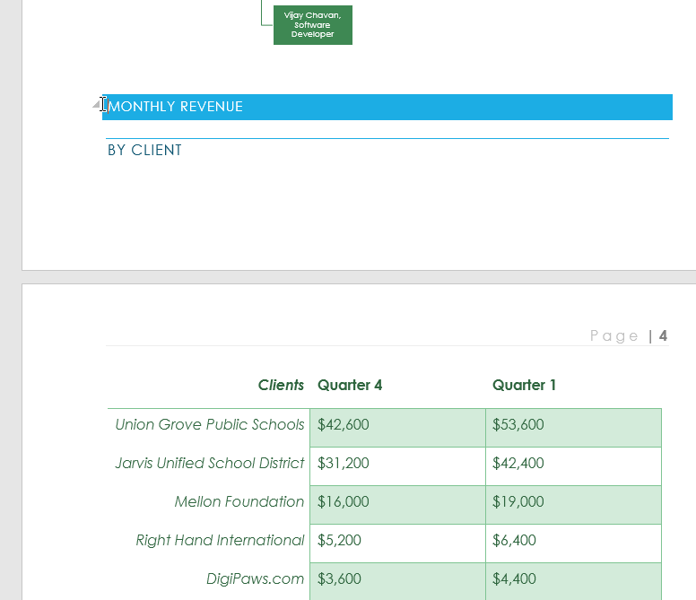
2. On the Insert tab, click the Page Break command. You can also press Ctrl+Enter on your keyboard.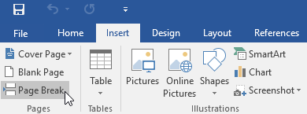
3. The page break will be inserted into the document, and the text will move to the next page.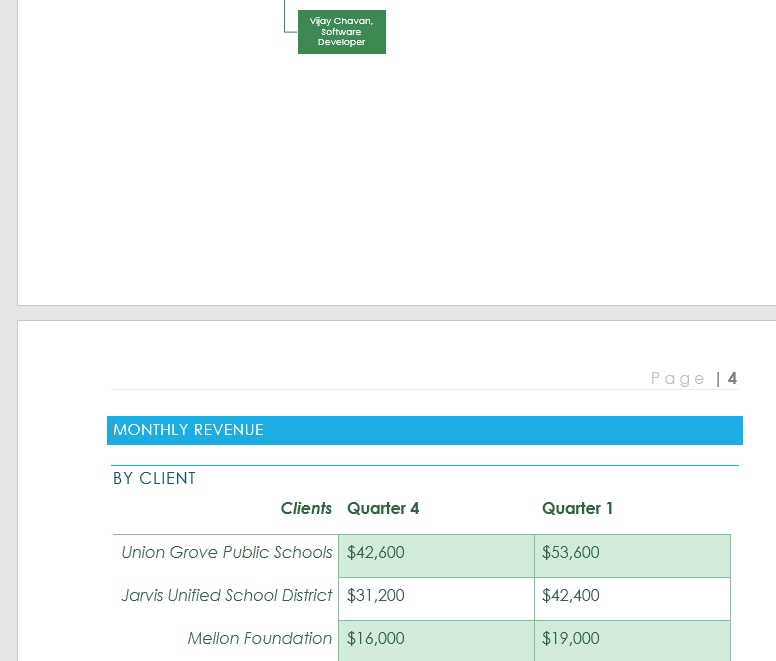
By default, breaks are invisible. If you want to see the breaks in your document, click the Show/Hide command on the Home tab.
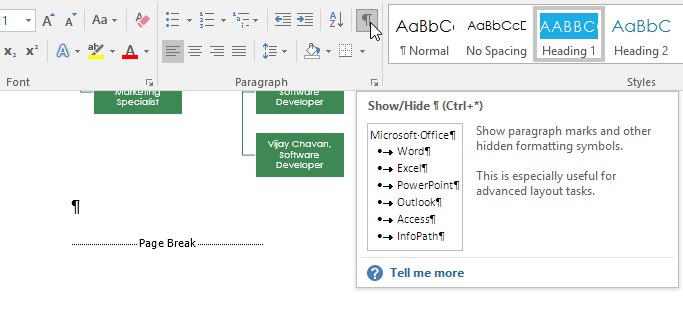
Section breaks create a barrier between different parts of a document, allowing you to format each section independently. For example, you may want one section to have two columns without adding columns to the entire document. Word offers several types of section breaks.
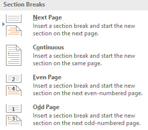
In our example, we'll add a section break to separate a paragraph from a two-column list.
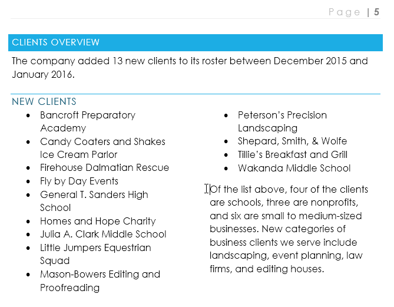
2. On the Page Layout tab, click the Breaks command, then select the desired section break from the drop-down menu. In our example, we'll select Continuous so our paragraph remains on the same page as the columns.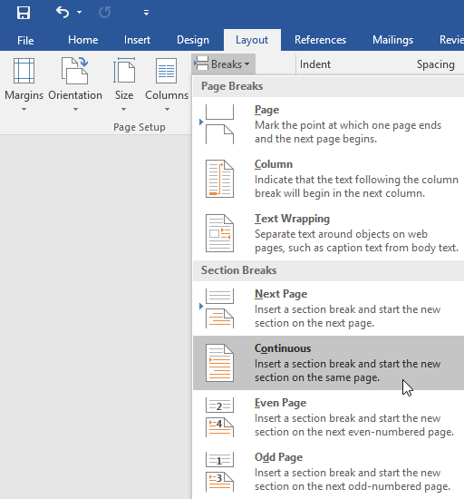
3. A section break will appear in the document.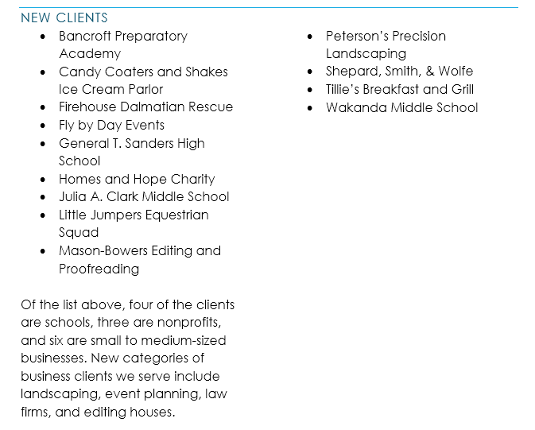
4. The text before and after the section break can now be formatted separately. In our example, we'll apply one-column formatting to the paragraph.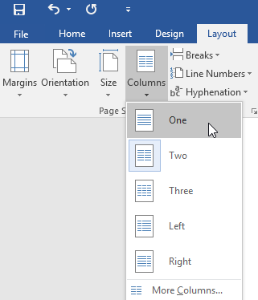
5. The formatting will be applied to the current section of the document. In our example, the text above the section break uses two-column formatting, while the paragraph below the break uses one-column formatting.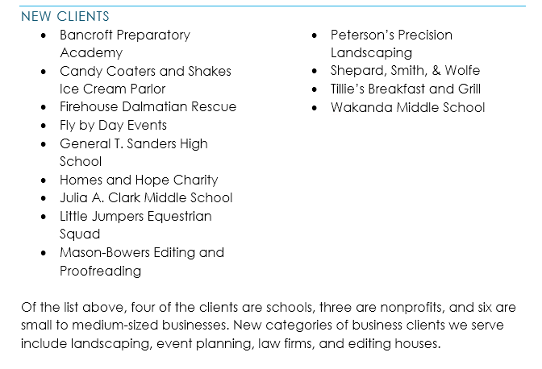
When you want to format the appearance of columns or modify text wrapping around an image, Word offers additional break options that can help:
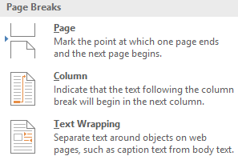
By default, breaks are hidden. If you want to delete a break, you'll first need to show the breaks in your document.
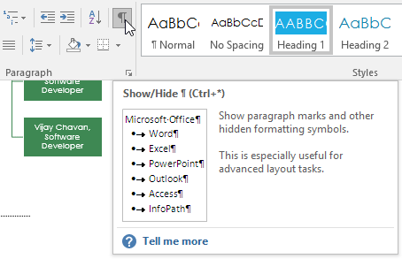
2. Locate the break you want to delete, then place the insertion point at the beginning of the break.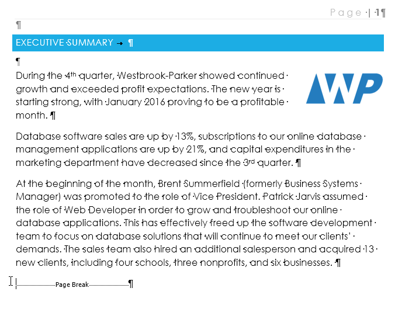
3. Press the Delete key. The break will be deleted from the document.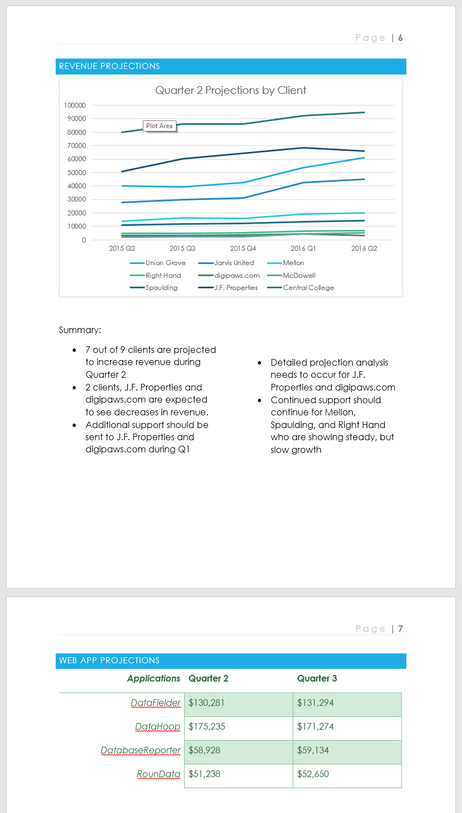
/en/word/columns/content/